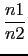
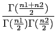
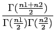

suivant: La fonction de répartition
monter: Les fonctions de répartition
précédent: Complément à 1 de
Table des matières
Index
Densité de probabilité de la loi de Fisher-Snédécor : fisher snedecor
fisher(n1,n2,x) ou snedecor(n1,n2,x) est a densité
de probabilité de la loi de Fisher-Snédécor ayant n1,n2 degrés
de liberté.
fisher(n1,n2,x), vaut pour x  0 :
0 :
 n12xn1-22
n12xn1-22 1 + ()x-n1-n22
1 + ()x-n1-n22
où  est définie pour x > 0 par
(x) =
est définie pour x > 0 par
(x) =  e-ttx-1dt
e-ttx-1dt
On tape :
fisher(5,3,2.5)
Oo on tape :
snedecor(5,3,2.5)
On obtient :
0.10131184472
On tape :
fisher(4,2,1)
On obtient :
8/27
On tape :
fisher(4,2,1)
On obtient :
8/27
Documentation de giac écrite par Renée De Graeve